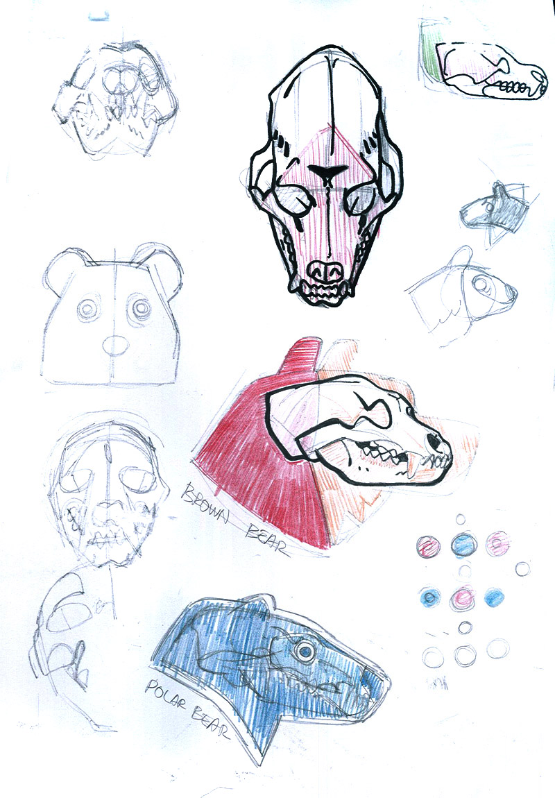
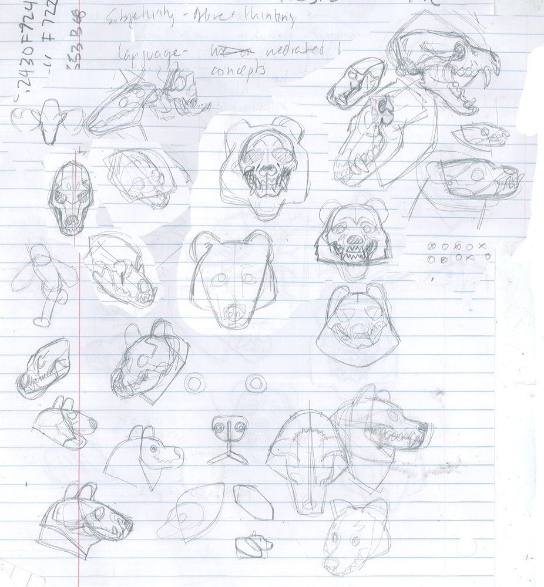
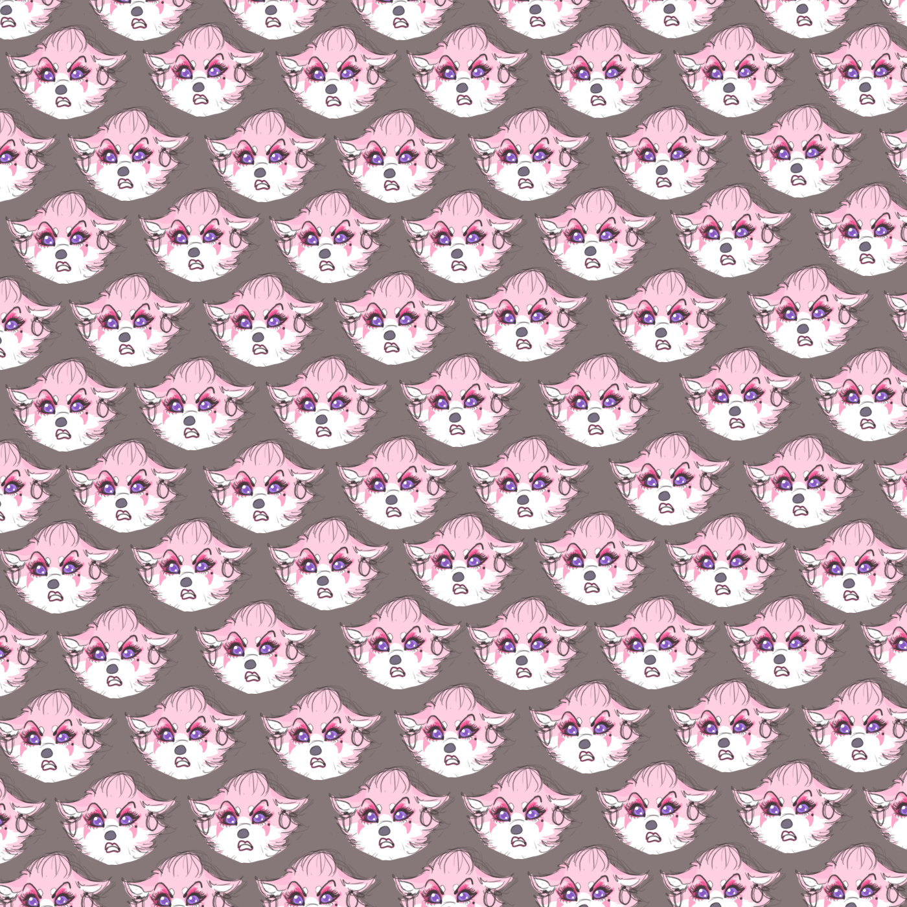
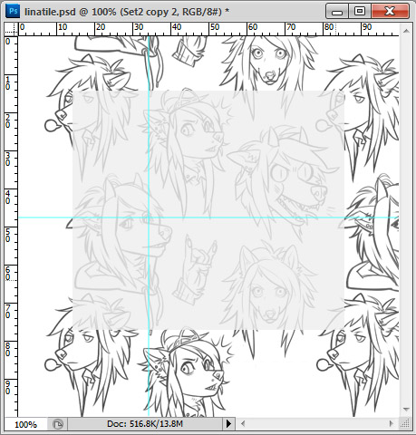
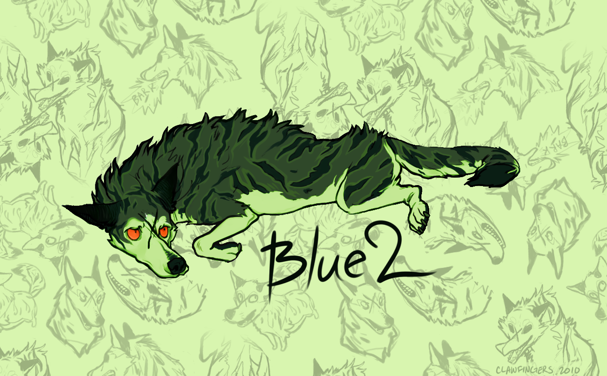

Illustration • Design • Words
next prev next prev next prev next prev
All content ©
Aaminah Cole 2013
Aaminah Cole 2013

Bear Skulls/2013
On a visit to the Walters Art Museum, a display showcasing a polar bear and brown bear skull side by side caught my attention. The polar bear's skull was so smooth and streamlined compared to the lumpy defined brow of its southern cousin. I did some quick studies which became the inspiration for this pattern.
The skulls held my interest and later I would riff on them extensively, many of the doodles leaning iconic. Eventually I arrived at the elements for the final pattern.On site studies.



Pokey Pattern/2013
Part of my larger project Pokey Product Suite.
I designed this pattern for use across a suite of products (varying from shoulder bags to sketchbook covers) to unify them all around a character. The tile for this is huge, a consequence of prioritizing keeping a consistent density, and keeping the tile's "seams" hidden. it led me to later question if i'd met my goal: the seams arent obvious maybe because they're fewer, not because they're well hidden.
I designed this pattern for use across a suite of products (varying from shoulder bags to sketchbook covers) to unify them all around a character. The tile for this is huge, a consequence of prioritizing keeping a consistent density, and keeping the tile's "seams" hidden. it led me to later question if i'd met my goal: the seams arent obvious maybe because they're fewer, not because they're well hidden.
Go to project page for more>>
Individual poses

A Few of My Favorite Things/2012
Assignment. A tiling pattern featuring a few of my favorite things:
- Dogs
- Longhair chihuahuas
- Sable tricolor markings
- Things with two heads
- Cake
- Cool colors, high contrast
- My projects+characters
Erf's Peso/2011
I think it all snowballed from this hilarious pattern Erf had made years before, completely unrelated of her character's "cholafied" mug arranged in a stark grid staring down the viewer:
Clas: I'm being paid in digital hay-pesosSome time ago, my pals Vekke and Erf--or more correctly Elf"--and I had the idea for our characters to be in a mariachi band together, "Los Burritos del Norte" we called ourselves.
Clas: that's like, negative money
I think it all snowballed from this hilarious pattern Erf had made years before, completely unrelated of her character's "cholafied" mug arranged in a stark grid staring down the viewer:
This is a little pattern I whipped up with intention of making matching ones for Vekke and myself. They'd feature our characters and another kitschy element of Mexicana—I think Vekke chose a charango (armadillo-guitar)— to coordinate our tumblogs. For better or worse our project never made it past brainstorming. Steph lucked out and got a pattern because because I happened to be mailing her a tiny painting of Erf I did on a scrap of aquarium paper and thought a custom patterned envelope would be a cute surprise:
"All up in da hood, G"
Imagine finding Elf at the end of a rainbow with a fat sack of digital hay-pesos. Would you smile? Frown? It's a tough call and there's plenty reason for either.

Lina&Shark/2010
Blast from the past! I consider this my first "modern" tiling pattern—"modern" in reference to technique:

Tiling pattern based off of discrete "elements", here character portraits;

Notice how the background heads don't tile, they're just arranged with line density in mind to form a background "texture"
I merely formalized the cut&paste bg I did in an earlier drawing of a friend's character.
Notice how the background heads don't tile, they're just arranged with line density in mind to form a background "texture"
I used guides to align all my elements, later I would discover them useful for determining tile size and neatly cropping the pattern tile at its seams. This thinking and method have defined my approach to patternmaking since.